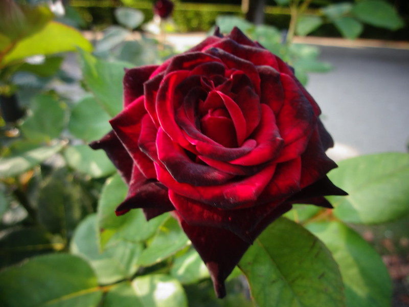
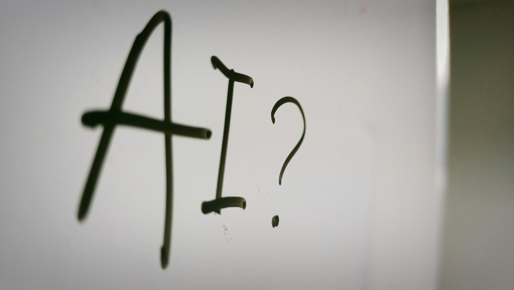

Respone to “In Plato’s Cave” by Susan Sontag
When my family received our first digital camera, my friends and I would constantly take pictures, mainly of ourselves, to show case our top model skills (this was when America’s Next Top Model was thee show to watch). We wanted to feel like we could be in magazines or on billboards, and much of that has stuck with me as I’ve grown up taking photos.
Much like the 15th century artists who began painting detailed self-portraits, I too wanted to document elaborate or intricate “selfies” that would forever be frozen in time. Images that made me feel strong, powerful, beautiful, because I often didn’t feel that way when I was not behind a camera. Taking so many pictures until I got the right one because then I could look back at them and say, “ah, yes. This is what I want to see myself as. This is what I wish I looked like every second of every day.” While that little voice still pops into my head, as an almost 30-year-old woman with two kids, a changed physique, and some more wisdom, I can accept when the photo is not the “right” one. For a long time, to me, photography had often been about beauty, capturing the spectacle of aesthetics. But as much as beauty is held in high regards, photography is also about truth telling, and the beauty remains true even if the angles, lighting, and editing are not there to crutch onto.
The frozen forever moments are taken to capture the sparkle, or essence within us and the world around us. To represent who and what we are at that given moment, even if the outside world deems them “ugly” or “undesirable”. Whether it be a self-portrait taken by a professional, a bathroom selfie, a withering flower laying on broken, littered concrete, graffiti, the clouds in the sky, etc., there is (what I like to say) art in everything; I am art, and art is me. No, objects cannot literally describe or see themselves as this art I’m referring to, but as the producer of the image, I take on that role. The withering roses are themselves, naturally living the way they are, unknowing that another even recognizes them as beautiful. We as humans subscribe to that definition. And no, the roses can’t look at the image and say, “wow I feel so seen”, but does that mean they shouldn’t be seen?

Response to "With ‘AI slop’ distorting our reality, the world is sleepwalking into disaster" by Nesrine Malik.

Nesrine Malik made several insightful points throughout her article regarding AI. The main one that I took away was the negativity surrounding AI as it rises in popularity. AI is another visual tool used to mis/disinform citizens about the world, and more often than not continues to divide human beings with violent, fetishized, fantasized imagery, as well as casual which further helps to confuse the masses (could AI really be all bad if you can create a video with 1000 cute kittens trying to catch a laser pointer?).
Malik spoke a lot about the visual image side of AI and what that is doing to our psyches. One thing about human beings is that we like visuals and unfortunately will use pictures or videos to not have to do research or put in any extra work to find out real, valuable information. In the age of the Internet especially, visuals are key and a major thing that comes with the democratization of the Internet is the free will people have to produce content, whether it’s good, bad, or there for the sake of being there. “Take a picture or it didn’t happen” is the kind of world we live in, knowing that photos/videos can be staged and produced by persuasive creators for the viewing and entertainment of naïve consumers.
The reason they don’t have specific classes about propaganda in grade schools is the same reason why they don’t teach media literacy from a young age. Somebody in this world would lose money. Malik mentions an older relative who believes the stories of the AI content that is sent to them, and I think it’s safe to say many of us know someone from an older generation who does the exact same thing. AI may not be new, but its accessibility in our lives definitely is. This side of life is not yet taught in school therefore it’s not taught at home; it is almost a privilege to have some sort of media literacy training or be around someone who can help you navigate through the world of mis/disinformation. If we were all able to tell what was created (or generated I should say) for the sake of pushing an agenda, and what is actual reality, then there would be no reason to have fears, anxiety, political/social opinions, buy/consume, etc., something that I believe the capitalism we experience in the US society thrives off of.
In some ways, I do see AI as an art form, especially if it’s created by human hands with the intention to provoke thought, questions, conversations, communities, but overall, it seems to be the opposite; a tool used to disregard the artist and their talent, and to help speed up the production of content…Not to mention, AI is horrible for the environment, so if the propaganda doesn’t lead us to some type of civil war that demolishes us and our society, the rapid destruction of our planet will certainly do that.